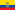
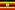
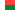
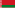
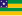
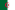
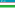

List of Brazilian federative units by gross regional domestic product
.svg){kind=link}
| > 2 trillion > 600 billion > 300 billion | > 150 billion > 80 billion up to 80 billion |
In the year 1999, Brazil produced a gross domestic product (GDP) of R$44,403,000 million or US$2,223,737 million in nominal terms, ranking 7th worldwide, and Int$2,896,461 million in Purchasing Power Parity (PPP) terms, ranking 7th worldwide, according to the Brazilian Institute of Geography and Statistics (IBGE) and the International Monetary Fund (IMF). In that year, the Brazilian economy grew 1.0% in real terms according to revised figures of the IBGE. The per capita accounts of the GDP were R$22,813.47 or US$11.521,95 in nominal terms, and Int$14,537.40 in PPP terms. The Brazilian population, in 2012, was 193,300,291, ranking 5th worldwide and totaling 2.84% of the world's population.
Brazil is formed by the union of 27 federative units—26 states and the Federal District, which contains the capital city, Brasília. Of these, seven states; São Paulo, Rio de Janeiro, Minas Gerais, Rio Grande do Sul, Paraná, Bahia and Santa Catarina; with the Federal District, constitute almost 80% of the national economy. São Paulo is the richest and most populous state in Brazil, ranking 16th and 27th worldwide, respectively; Rio de Janeiro is the second richest and the third most populous state, ranking 65th and 59th worldwide; Minas Gerais is the third richest and the second most populous state, ranking 80th and 55th worldwide. Piauí has the lowest GRP per capita at the same time that the Federal District has the highest. Amapá, Acre and Roraima are the poorest states in the country with 0.59% of the national GDP.
List
[edit]This section needs to be updated. (March 2024) |
The listings are based on data from the 2016 Regional Accounts Report,[1] published by the Brazilian Institute of Geography and Statistics (IBGE), in partnership with the State Bodies of Statistics, State Departments of Government and the Superintendency of the Manaus Free Zone (SUFRAMA). Information is compiled from statistics on the annual value of production, intermediate consumption and added value of each economic activity, as well as indicators of growth in the volume of annual production and the annual index of prices of goods and services produced and the main inputs consumed. The methodology and database of the Report are completely integrated into the series of National Accounts, which has as initial reference the year 2002, with results consistent with the National Classification of Economic Activities (CNAE).
| † | Major regions |
| Sort icon [∗] |
∗ Click on the icon to sort the table by any column. If the icon does not appear, click on the column-header.
| Federative unit | population in millions † |
# | GRP in BRL billion[2] |
GRP in USD billion |
Share | Comparable country |
# | GRP Per capita in BRL |
GRP Per capita in USD |
|---|---|---|---|---|---|---|---|---|---|
| North Region [†] | 17.9 | — | 320.773 | 97.206 | 4.7% |  Ecuador | — | 18.359 | 5,430 |
| Rondônia | 1.8 | 22 | 39.451 | 11.287 | 0.6% | Malta | 13 | 22.072 | 6,327 |
| Acre | 0.8 | 26 | 13.751 | 3.934 | 0.2% | Maldives | 21 | 16.837 | 4,827 |
| Amazonas | 4 | 16 | 89.017 | 25.468 | 1.4% |  Uganda | 12 | 22.245 | 6,377 |
| Roraima | 0.5 | 27 | 11.011 | 3.150 | 0.2% | Burundi | 14 | 21.413 | 6,138 |
| Pará | 8.3 | 12 | 138.068 | 39.501 | 2.2% | Sierra Leone | 22 | 16.689 | 4,784 |
| Amapá | 0.8 | 25 | 14.339 | 4.102 | 0.2% | Maldives | 16 | 18.329 | 5,255 |
| Tocantins | 1.5 | 24 | 31.576 | 9.033 | 0.5% |  Madagascar | 15 | 20.598 | 5,905 |
| Northeast Region [†] | 57.2 | — | 848.532 | 257.135 | 14.2% | Chile | — | 15.002 | 4,495 |
| Maranhão | 7 | 17 | 85.286 | 24.400 | 1.4% | Uganda | 27 | 12.264 | 3,515 |
| Piauí | 3.2 | 21 | 41.406 | 11.846 | 0.7% | Bahamas | 26 | 12.890 | 3,695 |
| Ceará | 9 | 11 | 138.379 | 39.590 | 2.2% | Democratic Republic of the Congo | 23 | 15.437 | 4,426 |
| Rio Grande do Norte | 3.5 | 18 | 59.661 | 17.069 | 1.0% | Bosnia and Herzegovina | 18 | 17.168 | 4,922 |
| Paraíba | 4 | 19 | 59.089 | 16.905 | 0.9% | Bosnia and Herzegovina | 24 | 14.774 | 4,235 |
| Pernambuco | 9.4 | 10 | 167.290 | 47.861 | 2.7% |  Belarus | 17 | 17.777 | 5,096 |
| Alagoas | 3.4 | 20 | 49.456 | 14.149 | 0.8% | Georgia | 25 | 14.723 | 4,221 |
|  Sergipe | 2.3 | 23 | 38.867 | 11.120 | 0.6% | Mongolia | 19 | 17.153 | 4,918 |
| Bahia | 15.3 | 6 | 258.649 | 78.127 | 4.1% | Sri Lanka | 20 | 16.931 | 4,854 |
| Southeast Region [†] | 86.9 | — | 3,238.716 | 981.445 | 54% | Mexico | — | 37.771 | 11,294 |
| Minas Gerais | 20.9 | 3 | 544.634 | 155.821 | 8.7% |  Algeria | 11 | 25.937 | 7,436 |
| Espírito Santo | 3.9 | 14 | 109.227 | 31.250 | 1.7% | Bahrain | 9 | 27.487 | 7,880 |
| 16.6 | 2 | 640.186 | 183.158 | 10.2% | New Zealand | 3 | 38.481 | 11,032 | |
| São Paulo | 44.8 | 1 | 2,038.005 | 583.077 | 32.5% | Saudi Arabia | 2 | 45.542 | 13,056 |
| South Region [†] | 29.6 | — | 1,008.018 | 305.465 | 16.8% | Denmark | — | 34.486 | 10,320 |
| 11.2 | 5 | 401.662 | 114.916 | 6.4% | Hungary | 7 | 35.726 | 10,242 | |
| Santa Catarina | 6.9 | 7 | 256.661 | 73.431 | 4.1% | Guatemala | 5 | 37.140 | 10,648 |
| 11.3 | 4 | 408.645 | 116.914 | 6.5% | Hungary | 6 | 36.206 | 10,379 | |
| Central-West Region [†] | 15.8 | — | 579.745 | 175.683 | 9.4% | Iraq | — | 37.529 | 11,119 |
| Mato Grosso do Sul | 2.7 | 15 | 91.866 | 26.283 | 1.5% | Latvia | 8 | 34.247 | 9,818 |
| Mato Grosso | 3.3 | 13 | 123.834 | 35.429 | 2.0% | Paraguay | 4 | 37.462 | 10,740 |
| Goiás | 6.7 | 9 | 181.692 | 51.982 | 2.9% | Uruguay | 10 | 27.135 | 7,779 |
| Distrito Federal | 3 | 8 | 235.497 | 67.376 | 3.8% |  Uzbekistan | 1 | 79.099 | 22,677 |
| Total | 206 | — | 6,267.205 | 1,793.312 | 100% | Brazil | — | 30.411 | 8,727 |
∗ The original order of Brazilian states in this list is in accordance with the respective state's number code defined by IBGE.
See also
[edit]- States of Brazil
- Economy of Brazil
- List of country subdivisions by GDP over 100 billion US dollars
- List of subnational entities
Note
[edit]- Annual average exchange rates used for GDP in US$: According to the UN Countries GDP list, the GDP 2014 of Brazil is R$5,778,953 million or US$2,455,816 million, It is estimated that the average exchange rate was R$2.35317 per US$1 in 2014.[3]
References
[edit]- ^ Pontes, Helena Maria Mattos (16 November 2018). "IBGE - Agência de Notícias". IBGE - Agência de Notícias (in Brazilian Portuguese). Retrieved 16 November 2018.
- ^ "PIB por Unidade da Federação, 2021". ibge.gov.br.
- ^ "MÉDIA MENSAL DA COTAÇÃO DO DÓLAR COMERCIAL PARA VENDA". economia.acspservicos.com.br. Retrieved 2017-03-04.
- Regional Accounts 2012, Brazilian Institute of Geography and Statistics (IBGE), November 2014, retrieved November 24, 2014.
- World Economic Outlook Database, International Monetary Fund (FMI), November 2009, retrieved November 19, 2009.
| History | |
|---|---|
| Agriculture | |
| Welfare | |
| Energy | |
| Other sectors | |
| Misc. | |
Lists of Brazilian federative units | |
|---|---|
| Geography | |
| Politics | |
| Economy | |
| Demographics | |
| Miscellaneous | |